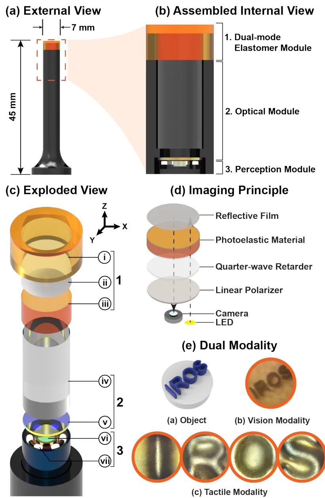

(01) Research · Purdue MARS Lab
Tactile sensing & robotics
Building tiny, camera-based touch sensors that give surgical robots a sense of touch without taking away their sight.

Overview
In open surgery, surgeons find tumors partly by feel, pressing on tissue to locate stiff lumps. Robot-assisted minimally invasive surgery (RMIS) takes that away. The surgeon only has a camera feed, and small or buried tumors can look exactly like healthy tissue.
Our sub-group in the MARS Lab builds miniaturized, vision-based tactile sensors: soft elastomer skins watched by a tiny camera, so a robot can measure contact force, shape and hardness. My job is the hardware that makes those sensors physically possible at this scale:
- Designed compact mechanical components in Siemens NX for a vision-based photoelastic tactile sensor, balancing manufacturability, optical alignment and room for the embedded camera and LEDs.
- Fabricated and iterated prototypes (resin prints, silicone molds, cast elastomer layers) to resolve packaging and assembly problems.
- Validated designs with doctoral researchers through prototype assembly and mechanical testing, then turned the results into design revisions.
This page covers the sub-group's projects I've worked across: MVP-Tac, HueTac, PhoTac Wedge, TacSkin and Seeing Touch. Results and figures belong to the whole team. MVP-Tac is published as Prince et al., arXiv:2607.18660 (open source at mvp-tac.github.io).
MVP-Tac: vision + touch in 7 mm
Most tactile sensors block the camera's view, and in surgery losing vision isn't acceptable. MVP-Tac solves this with reflective photoelasticity. A thin photoelastic elastomer under a half-silvered membrane sits above a circular polarizer, a camera and LEDs. With the LEDs off, the camera sees straight through the membrane (vision mode). With the LEDs on, pressing the skin produces stress fringes that the camera reads as force (tactile mode).
The parts and molds are 3D printed. The elastomer is VytaFlex 20, cast in a 5 mm mold, mirror-coated and then sealed with a protective overlayer. A key mechanical problem was bonding: polyurethane doesn't bond chemically to the small acrylic spacer, so the joint failed during calibration until the team switched to a Ure-Bond II adhesive step.
HueTac: molding the skin
HueTac is a dome-shaped color tactile sensor: a resin-printed skeleton covered in a dyed silicone skin. Most of my lab time goes here, turning CAD into parts that actually come out of the mold right.
- Surface prep. I washed and cured the resin skeletons in alcohol, then hand-sanded the fingertips to final geometry. We found that heat from long power-sanding was warping the exoskeletons, so finishing moved to careful hand work.
- Fixing an off-center cast. The first silicone pour came out with the skeleton off-center. We traced it to the mold, redesigned the male mold so it locates the skeleton, and moved the hole features to a resin printer with ±0.02 mm tolerance after CNC proved impractical for that geometry.
- Opacity tuning. I mixed silicone batches at different dye concentrations and compared their opacity to pick a formula that hides the internals while still passing the light the sensor needs.
PhoTac Wedge & grippers
PhoTac Wedge is a gripper-mounted tactile sensor that learns normal force from a single image. Building that dataset is a manufacturing problem: the team resin-printed 100+ calibration objects and designed an ATI force/torque sensor holder, then pressed each object into the sensor while logging force.
Alongside that, the group redesigned the LeRobot gripper: new contact surfaces, screw bosses for the light board, a camera mount, and a mold for casting silicone onto the fingers.
TacSkin & Seeing Touch
The rest of the group pushes touch beyond fingertips. TacSkin explores large-area skins: photodiode and mutual-capacitance pads, and SpectraTac, a camera-free optical sensor that uses 3 RGB emitters and 3 color sensors around clear PDMS to predict 6-axis force/torque. Others sew conductive-thread sensors into gloves. Seeing Touch mounts these sensors on Franka Panda and LeRobot arms and collects teleoperated demonstrations with live tactile heatmaps for robot learning.
What I took away
- At millimeter scale, tolerances run the design. A 0.1 mm offset in a mold or spacer shows up directly as blur, a bad bond or a failed calibration.
- Manufacturing is part of the design. Choosing resin over CNC, or hand sanding over power sanding, decided whether a part worked at all.
- Research teams work in agile loops. We work with mob programming and swarming, and every build → test → revise cycle is reported weekly to the PhD lead.
Top skills utilized
- Siemens NX
- Design for manufacturing
- Mold design
- Silicone casting
- Resin & FDM printing
- Optical alignment
- Test fixtures
- Research collaboration